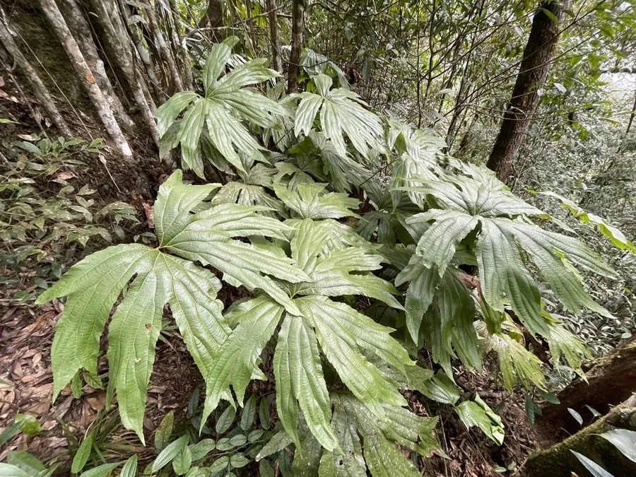

蕨类与裸子植物 · 植物界
中华双扇蕨 Dipteris chinensis

双扇蕨科双扇蕨属陆生蕨类，叶片深裂成两把对称的扇形，叶脉网状如龟甲，形态奇特，是珍稀的孑遗蕨类。
- 分类
- 门蕨类植物门纲水龙骨纲目里白目科双扇蕨科属双扇蕨属
- 栖息环境
- 海拔 800–1500 米的山地林下与溪谷，喜温暖湿润半阴
- 地理分布
- 中国广东、广西、福建、江西、湖南、贵州、云南等地
- 保护级别
- 国家二级重点保护野生植物；IUCN 暂无评估
物种志
中华双扇蕨为双扇蕨科双扇蕨属陆生蕨类，植株高可达一米，根状茎长而横走，密被褐色鳞片。叶片远生，叶柄长，叶片掌状深裂为两半，每半再分裂成扇形，形似两把打开的折扇，革质，表面深绿，叶脉网状。孢子囊群小，圆形，散生于叶片背面，孢子期夏秋季。
中华双扇蕨分布于中国广东、广西、福建、江西、湖南、贵州、云南等地，多生于海拔八百至一千五百米的山地林下和溪谷。它喜温暖湿润和半阴环境，适宜疏松肥沃、排水良好的酸性土壤，不耐寒。叶片对称如扇、叶脉网状，形态奇特，是研究蕨类演化的重要材料，也是珍稀的观叶植物。由于野生种群数量稀少，被列为国家二级重点保护野生植物。
形态与习性
- 株高可达 1 m，根状茎横走
- 叶形掌状深裂成两扇形
- 孢子期夏秋季，囊群圆形
- 光照喜半阴，忌强光
- 水分喜湿润，忌积水
- 土壤疏松肥沃的酸性土
- 主要用途珍稀观叶植物、科研材料
趣味知识
- 中华双扇蕨的叶片对称地分成两把扇形，像一只展开的蝴蝶。
- 它的叶脉呈网状，是蕨类中较为原始而特殊的脉序类型。
- 双扇蕨科在侏罗纪曾广布全球，现存种类稀少，被称为活化石。